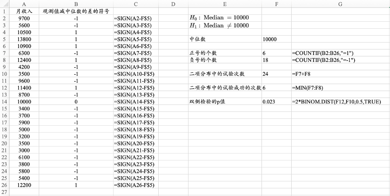
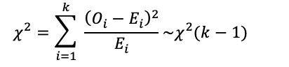
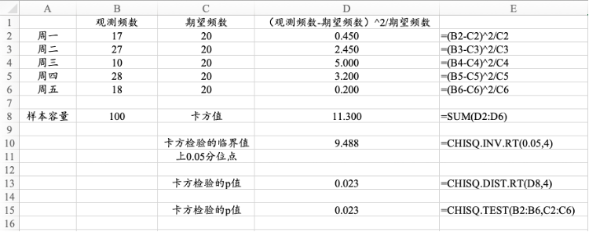
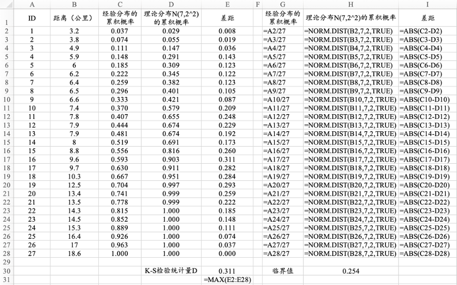
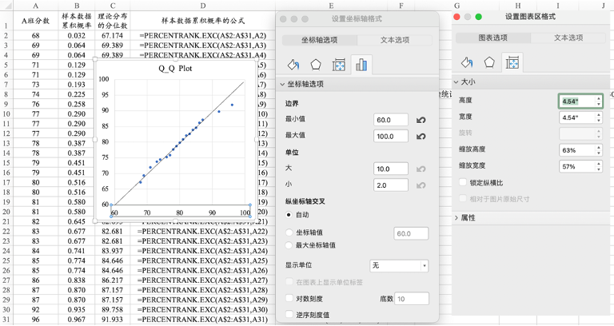
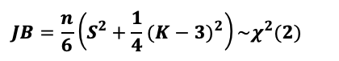
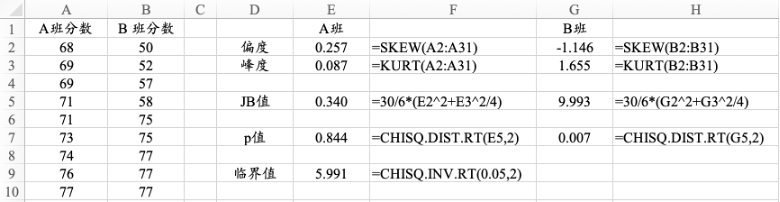
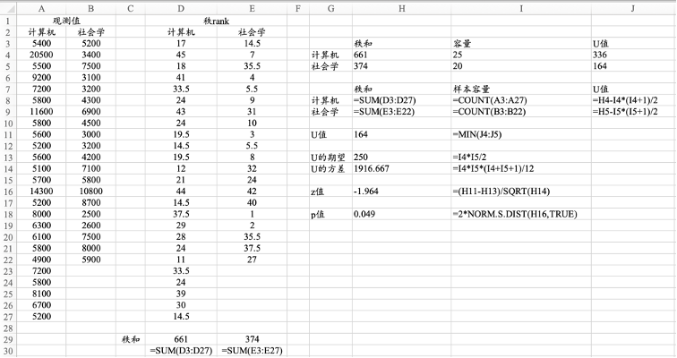

第13章 非参数检验
第13章 非参数检验
13.1单个总体的非参数检验 13.2多个总体分布的比较
13.1单个总体的非参数检验
13.1.1 中位数检验
13.1.2 定性数据分布的检验：拟合优度检验
13.1.3 定量数据分布的检验： Kolmogorov-Smirnov检验
13.1.4 正态分布检验
13.1.1 中位数检验
符号检验的思想是将观测值与假定的中位数进行比较。
若中位数等于假定值，那么小于假定值的观测值的个数和大于中位数的观测值的个数应该比较相当；如果这二者相差悬殊，那么真实的中位数应该不等于假定值。
13.1.1 中位数检验

13.1.1 中位数检验
Excel实操技巧
SIGN函数返回单元格数值的符号，当数值大于0时，返回1；当数值等于0时，返回0；当数值小于0时，返回-1。
COUNTIF函数返回满足条件的单元格的个数。
BINOM.DIST函数计算二项分布的累积概率，第1项参数代表试验成功的次数，第2项参数代表试验的总次数，第3项参数代表试验成功的概率，第4项参数“TRUE”代表返回累积概率。
13.1.2 定性数据分布的检验：拟合优度检验
拟合优度检验用于检验定性数据是否服从于某种分布
原假设是“总体服从某种分布”，备择假设是“总体不服从某种分布”。
在非参数检验中，原假设和备择假设是固定的，不能随意调换。
13.1.2 定性数据分布的检验：拟合优度检验

13.1.2 定性数据分布的检验：拟合优度检验

13.1.2 定性数据分布的检验：拟合优度检验
实操技巧
CHISQ.TEST函数可以实现拟合优度检验，该函数的第1项参数是观测频数，第2项参数是期望频数，返回拟合优度检验的p值。
p值小于显著性水平，则拒绝原假设，认为总体不服从检验的分布。
13.1.3 定量数据分布的检验： Kolmogorov-Smirnov检验
Kolmogorov-Smirnov检验的核心思想: 对比数据的经验分布与理论分布的差距。
若二者差距很小，那么可以认为经验分布与理论分布一致。
若二者差距很大，就说明经验分布与理论分布不一致。
经验分布就是样本数据的分布，理论分布就是研究者假定的总体服从的分布。
13.1.3 定量数据分布的检验： Kolmogorov-Smirnov检验

13.1.3 定量数据分布的检验： Kolmogorov-Smirnov检验
Excel实操技巧
将样本数据排序，计算经验累积概率。
然后利用“DIST”类函数，计算理论分布下的累积概率。
计算经验累积概率和累积概率之间差距的绝对值最大值，若超过临界值，则拒绝“样本来自理论分布”的原假设。
13.1.4 正态分布检验
- Q-Q图的全称是Quantile-Quantile，是探查数据是否服从某种理论分布的直观的工具。
13.1.4 正态分布检验

13.1.4 正态分布检验– Jarque-Bera检验

13.1.4 正态分布检验– Jarque-Bera检验

13.1.4 正态分布检验– Jarque-Bera检验
实操技巧
将样本观测值按升序排列，利用PERCENTRANK.EXC函数计算观测值的排位，再根据排位计算在理论分布上对应的分位数。
绘制样本分位数和理论分布的分位数的散点图，若散点分布在一条倾角为45的的直线上，则说明样本数据服从理论分布。
首先计算样本数据的偏度和峰度，然后计算Jarque-Bera检验统计量的值，若JB值大于χ_0.05^2 (2)=5.991，则拒绝“数据服从正态分布”的原假设。
13.2 多个总体分布的比较
13.2.1两个独立样本：Mann-Whitney U检验
13.2.2 两个配对样本：Wilconxon符号秩检验
13.2.3 多个独立样本：Kruskal-Wallis检验
13.2.1两个独立样本：Mann-Whitney U检验
Mann-Whitney U检验由Mann和Whitney在1947年提出 ，用于检验两个相互独立的总体的分布是否一致。
为了纪念Wilcoxon对该方法的贡献，该检验也称作Wilcoxon秩和检验（Wilcoxon Rank Sum Test）。
13.2.1两个独立样本：Mann-Whitney U检验

13.2.1两个独立样本：Mann-Whitney U检验
实操技巧
RANK.AVG函数可以计算秩，第1项参数是需要排序的观测值，第2项参数是整个序列的数据范围，第3项参数等于1时代表升序排列。注意计算秩时，需要先对序列进行升序排列， RANK.AVG函数的第3项参数的默认值是0，代表降序排列。所以，在求秩时，需要将第3项参数设置为1。
根据需要，在必要时使用绝对引用$符号，然后拖曳填充柄，实现公式的快速填充。
13.2.2 两个配对样本：Wilconxon符号秩检验
如果两个样本是配对样本，要根据这两个配对样本来推断总体分布是否一致，需要使用Wilcoxon符号秩检验（Wilcoxon Signed-Rank Test）。
Wilcoxon在1945年提出了Wilcoxon符号秩检验 。
13.2.2 两个配对样本：Wilconxon符号秩检验

13.2.2 两个配对样本：Wilconxon符号秩检验
实操技巧
RANK.AVG函数可以计算秩，第1项参数是需要排序的观测值，第2项参数是整个序列的数据范围，第3项参数等于1时代表升序排列，等于0时代表降序排列。
SUM IF函数可以对满足条件的个案进行求和计算。第1项参数是条件区域D2:D21，第2项参数是条件表达式“>0”，第3项参数是F2:F21需要求和的数值区域。
13.2.3 多个独立样本：Kruskal-Wallis检验
Kruskal和Wallis在1952年提出了Kruskal-Wallis检验，用于判断多个总体的分布是否一致的 。
Kruskal-Wallis检验沿用秩的思想，该方法又称作基于秩的单因素方差分析（One-way ANOVA on Rank）。
13.2.3 多个独立样本：Kruskal-Wallis检验

13.2.3 多个独立样本：Kruskal-Wallis检验
实操技巧
RANK.AVG函数可以计算秩，第1项参数是需要排序的观测值，第2项参数是整个序列的数据范围，第3项参数等于1时代表升序排列，等于0时代表降序排列。
DEVSQ函数可以求所有观测值与均值的离差的平方和。
第13章总结